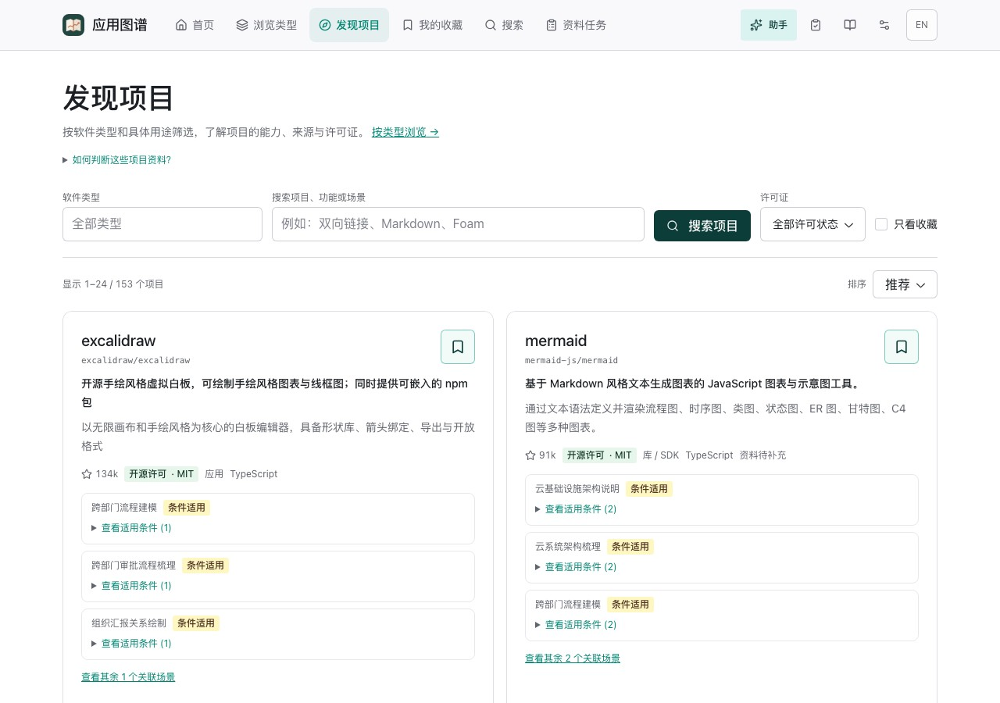
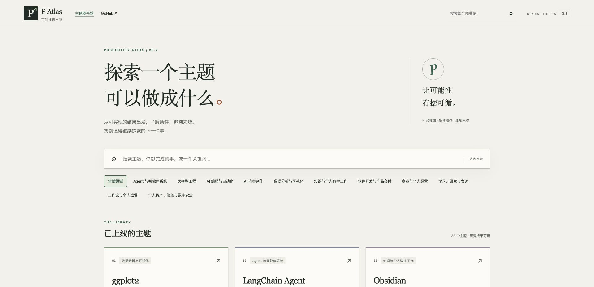

Works 作品
我创造的软件、工具和网站。每一项都有自己的介绍、截图和访问入口。

问笺馆 · 让模型交出能打开的作品网站 / 参考工具

提示词图谱 · 从任务出发使用 Prompt网站 / 参考工具

Atlas Methods · 可回查来源的 Skill 资料库网站 / 参考工具

语言表达分类体系 · 目的、操作与风格网站 / 参考工具

语义方向分类体系 · 从方向理解表达网站 / 参考工具

Lookbook · 设计系统图鉴网站 / 工具

Aide · 本地 AI 桌面入口软件 / macOS 应用

研映 Research2Video · 从研究到视频软件 / 工作流

Application Atlas · 以场景寻找真实项目软件 / 资料库

P Atlas · 可能性图书馆软件 / 资料库

PersonalSpace · 原生 macOS 个人数字空间软件 / macOS 应用

Radar · 信息雷达软件 / macOS 应用